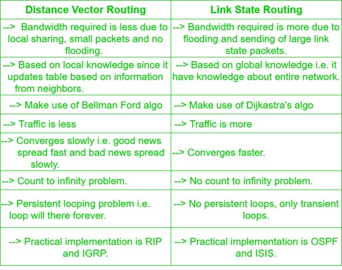

Prerequisite – Classification of Routing Algorithms
- It is a dynamic routing algorithm in which each router computes distance between itself and each possible destination i.e. its immediate neighbors.
- The router share its knowledge about the whole network to its neighbors and accordingly updates table based on its neighbors.
- The sharing of information with the neighbors takes place at regular intervals.
- It makes use of Bellman Ford Algorithm for making routing tables.
- Problems – Count to infinity problem which can be solved by splitting horizon.
– Good news spread fast and bad news spread slowly.
– Persistent looping problem i.e. loop will be there forever.
- It is a dynamic routing algorithm in which each router shares knowledge of its neighbors with every other router in the network.
- A router sends its information about its neighbors only to all the routers through flooding.
- Information sharing takes place only whenever there is a change.
- It makes use of Dijkastra’s Algorithm for making routing tables.
- Problems – Heavy traffic due to flooding of packets.
– Flooding can result in infinite looping which can be solved by using Time to leave (TTL) field.Comparison between Distance Vector Routing and Link State Routing:
